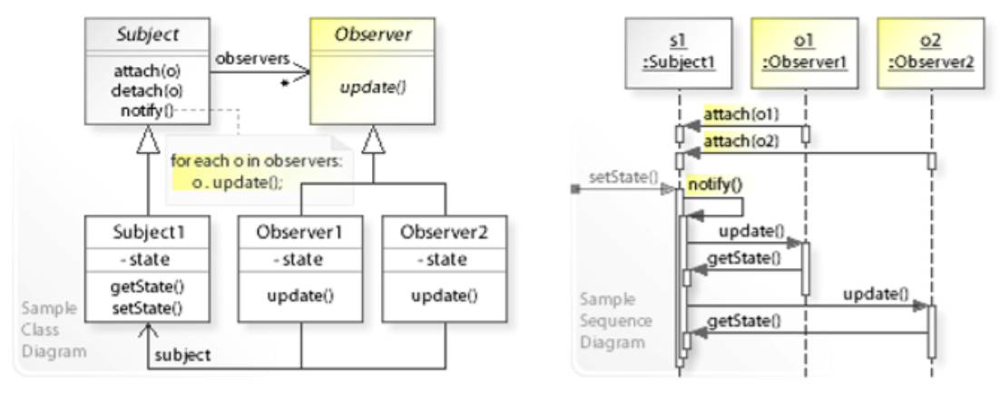
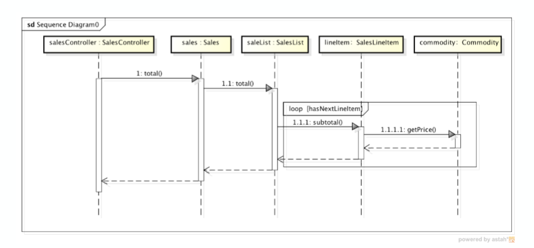
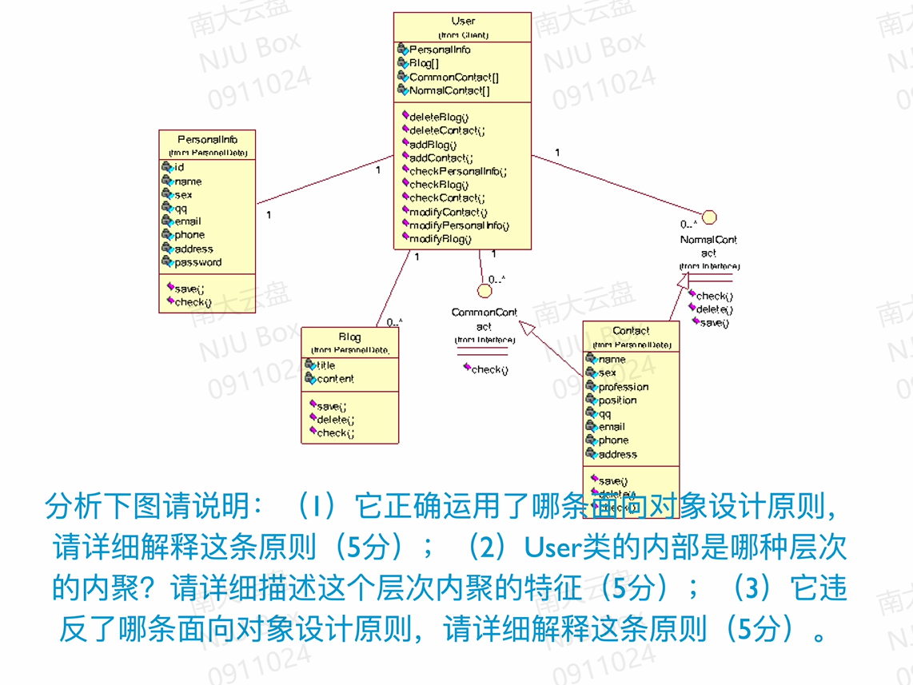

软件工程与计算2-复习提纲
01 软件工程基础
名词解释-软件工程：应用系统的、规范的、可量化的方法来开发、运行和维护软件，即将工程应用到软件。
02 软件工程的发展
简答：从 1950s~2000s 之间的特点
- 1950s：科学计算；以机器为中心进行编程；像生产硬件一样生产软件。
- 1960s：业务应用(批量数据处理和事物计算)；软件不同于硬件；用软件工艺的方式生产软件。
- 1970s：结构化方法；瀑布模型；强调规则和纪律。它们奠定了软件工程的基础，是后续年代软件工程发展的支撑。
- 1980s：追求生产力最大化；现代结构化方法/面向对象编程广泛应用；重视过程的作用。
- 1990s：企业为中心的大规模软件系统开发；追求快速开发、可变更性和用户价值；web 应用出现
- 2000s：大规模 web 应用；大量面向大众的 web 产品；追求快速开发、可变更性、用户价值和创新。
04 项目启动
如何管理团队？
- 在实验中采取了哪些办法？有哪些经验？
- 建立团队章程 持续成功 和谐沟通 不断总结 避免团队杀手
- 团队结构有哪⼏种？
- 主程序员团队 民主团队 开放团队
质量保障有哪些措施？ - 结合实验进⾏说明
- 需求开发——需求评审和需求度量；
- 体系结构——体系结构评审和集成测试(持续集成)；
- 详细设计——详细设计评审、设计度量和集成测试(持续集成)；
- 构造阶段——代码评审、代码度量、测试(测试驱动和持续集成)；
- 测试阶段——测试、测试度量。
- 要及时的根据保障计划进行质量验证，质量验证的方法主要有评审、测试和质量度量三种。
配置管理有哪些活动？ - 实验中是如何进⾏配置管理的
- 标识配置项:确定应该被保留的部分，并且给予他们确定标识，包含配置项的特征，包括生产者、基线建立时间、使用者等。
- 版本管理：极其重要
- 变更控制：变更请求表单，教材 61 页
- 配置审计：验证配置项的完整性、正确性、一致性和可追踪性。
- 状态报告：反映当前的配置状态。
- 软件发布管理：将配置项发布到开发活动之外，例如发布给客户。
05 需求基础
名词解释-需求
- 用户为了解决问题或达到某些目标所需要的条件或能力；
- 系统或系统部件为了满足合同、标准、规范或其它正式文档所规定的要求而需要具备的条件或能力；
- 对 1 或 2 中的一个条件或一种能力的一种文档化表述。
区分需求的三个层次
- 给出⼀个实例，给出其三个层次的例⼦
- 业务需求 Rx：目标，解决方案与系统特性，描述为什么要开发系统
- 用户需求 URx：任务，问题域知识，描述系统能帮用户做什么
- 系统需求 SRx：描述开发人员需要实现什么
- 对给定的需求示例，判定其层次 - 例如课程实验/ATM/图书管理…
掌握需求的类型
- 对给定的实例，给出其不同类型的需求例⼦
- 对给定的需求示例，判定其类型
- 例如课程实验/ATM/图书管理…
需求：
- 项目需求：人的数量、计划成本、时间
- R5：项目的成本要控制在 60 万元人民币以下。
- R6：项目要在 6 个月内完成。
- 过程需求：人的分共、合作、方法、工具
- R7：在开发中，开发者要提交软件需求规格说明⽂档、设计描述⽂档和测试报告。
- R8：项⽬要使⽤持续集成⽅法进⾏开发。
- 系统需求：软件 硬件 其它
- 软件需求：功能 数据 性能 质量 对外接口 约束
- 功能：能够为用户带来业务价值的系统⾏为；比如:在接到客户经理的请求后，系统应该为客户经理提供所有会员的个人信息。
- 数据：数据需求是需要在数据库、⽂件或者其他介质中存储的数据描述。数据信息、使用频率、可访问性、实体关系、完整性、数据保持要求
- 性能：需要进⾏专门的模拟和测试
- 约束：开发⼈员设计和构建系统时的选择范围
06 需求分析方法
为给定的描述
- 建⽴ ⽤例图
- 建⽴ 分析类图（概念类图）（只有属性，没有⽅法）
- 建⽴ 系统顺序图
- 建⽴ 状态图
用例图
步骤：
- 目标分析与解决方向的确定
- 寻找参与者
- 寻找用例
- 细化用例：⽤例描述了为应对一个业务事件，由一个用户发起，并在一个连续时间段内完成，可以增加业务价值的任务。

概念类图/分析类图
步骤：
- 识别候选类(名词分析法)
- 确定概念类 (看是否满足既有状态又有行为)
- 既需要维持一定的状态，又需要依据状态表现一定的行为：确定为一个概念类
- 如只需要维护状态，不需要表现行为：其他概念类的属性
- 不需要维护状态，却需要表现行为：首先重新审视需求是否有遗漏，因为没有状态支持的对象无法表现行为；如果确定没有需求的遗漏，就需要剔除该候选类，并将行为转交给具备状态支持能力的其他概念类
- 既不需要维护状态，又不需要表现行为：应该被完全剔除
- 识别关联(文本中提取出"名词＋动词＋名词"的结构)：第一标准是满足需求的要求，第二标准是现实状况
- 识别重要属性：协作的必要信息，通过分析用例的描述，补充问题域信息发现。
线段直接连接-普通的关联 文字为关联名称
空心菱形-聚合 实心菱形-组合 三角-集成
系统顺序图
消息种类：实心箭头-同步消息 普通箭头-异步消息 虚线-返回消息
不同边框
- alt 多选一：一定要选 可选分支用虚线分割，执行状态的分支上写监护条件，放在中括号中
- opt：一定要选 0 或 1
- loop：循环，用中括号写循环条件
状态图
- 状态：一组可观察的情况，描述了一个系统在给定时间的行为
- 状态转换：从一个状态到另一个状态的转换
- 事件：使系统表现出某种可预测的行为形式的事件
- 行为：由于过渡而发生的过程
07 需求文档化与验证
为什么需要需求规格说明？结合实验进⾏说明
- 方便交流，软件开发过程中，子任务与人员之间存在错综复杂的关系，存在大量的沟通和交流，所以软件开发中要编写不同类型的文档，每种文档都是针对项目中需要广泛交流的内容。因为软件需求需要进行广泛交流，所以要把需求文档化。
- 需求规格说明是在软件产品的角度以系统级需求列表的方式描述软件系统解决方案，书写需求规格说明，可以建立管理控制的基线，方便任务分配，制定工作计划，进行跟踪和度量。
- 在实验中，需求规格的重要性不只体现在结果上，还包括中间过程，在书写需求规格过程中，才真正把问题域的问题和分析模型的成果转化为系统级需求，方便小组成员真正明确需求，个人认为在这个阶段包含一部分的需求在发现和完整化。
对给定的需求示例，判定并修正其错误
- 对给定的需求规格说明片段，找出并修正其错误
了解需求文档化要点：
- 技术文档写作要点(简洁，精确，易读，易修改)；
- 需求书写要点(使用用户术语，可验证，可行性)；
- 需求规格说明文档书写要点(充分利用标准的文档模板，保持所以内容位置得当；保持文档内的需求集具有完备性和一致性；为需求划分优先级)
对给定的需求示例，设计功能测试⽤例 ==?==
- 结合测试⽅法
08 软件设计基础
名词解释-软件设计：指关于软件对象的设计，是一种设计活动。软件设计既指软件对象实现的规格说明，又指这个规格说明产生的过程。
- 以需求开发的制品(需求规格说明和分析模型)为基础，构建软件设计方案描述和原型，为后期的构造活动提供规划或蓝图。
- 工程性 艺术性 演化性 决策性
软件设计的核心思想是什么？
分解与抽象是软件设计的核心思想，两者都是由层次性的，彼此之间可以嵌套使用。
- 分解：在横向上将系统分割为几个相对简单的子系统与子系统之间的关系
- 抽象：在纵向上聚焦个子系统的接口(这里的接口与实现相对)，可以分离接口和实现，使得人们更好的关注软件系统本质，降低复杂度。
软件⼯程设计有哪三个层次？各层的主要思想是什么？
- 高层设计：基于反映软件高层抽象的构件设计，描述系统的高层结构、关注点和设计决策。
- 中层设计：更加关注组成构件的模块的设计、导入/导出、过程之间调用关系或者类之间的协作。
- 低层设计：深入模块和类的内部，关注具体的数据结构、算法、类型、语句和控制结构等。
09 软件体系结构基础
体系结构的概念：{部件(Component),连接件(Connector),配置(Configuration)}
- 部件是软件体系结构的基本组成单位之⼀,承载系统的主要功能,包括处理与数据;
- 连接件是软件体系结构的另一个基本组成单位,定义了部件间的交互,是连接的抽象表示;
- 配置是对"形式"的发展,定义了"部件"以及"连接件"之间的关联方式,将它们组织成系统的总体结构。
体系结构的风格的优缺点：
主程序子进程风格
- 组件：程序、函数和模块
- 连接件：在上述三个组件之间相互调用
优点：
- 流程清晰,易于理解(符合分解和分治的思想)。
- 强控制性(容易保证正确性)。
缺点：
- 程序调用是⼀种强耦合的连接⽅式,⾮常依赖交互⽅的接口规格,这会使得系统难以修改和复用。
- 程序调用的连接方式限制了各部件之间的数据交互,可能会使得不同部件使⽤隐含的共享数据交流,产⽣不必要的公共耦合,进⽽破坏它的"正确性"控制能力。
面向对象风格
- 组件：对象或模块
- 连接件：函数或调用
优点：
- 内部实现的可修改性(隐藏内部实现)。
- 易开发、易理解、易复用的结构组织(契合模块化思想)。
缺点：
- 接口的耦合性(由于方法调用机制，接口的耦合性无法消除)
- 标识(Identity)的耦合性(一个对象要和其他对象交互，必须知道标识)
- 副作用:难以理解、高耦合性以及数据的不一致视图
分层风格
- 组件：过程或对象的集合
- 连接件：在受限可见性下进行过程调用或方法调用
优点：
- 设计机制清晰,易于理解(抽象层次分离，隔离复杂度)。
- 支持并行开发(层次之间遵守程序稳定的接口)。
- 更好的可复用性与内部可修改性(接口的稳定性，不同层次的部件能够互相替代)。
缺点：
- 交互协议难以修改(可能需要改变所有的层次，接口具有强耦合性)。
- 性能损失(禁止跨层调用)。
- 难以确定层次数量和粒度。
Model-View-Controller Style MVC 风格
- 组件：
- 模型组件负责保持问题域知识和确认视图层的修改
- 视图组件负责显示信息给用户并且将用户的行为传递给控制器
- 控制器
- 修改模型的状态：将用户的行为和模型的更新映射起来
- 选择用来反映的视图
- 连接件：方法调用、信息、事件
优点：
- 易开发性(分别抽象了业务逻辑，表现和控制机制清晰，易于开发)
- 视图和控制的可修改性。
- 适宜于网络系统开发的特征。(MVC 不仅允许视图和控制的可修改性,⽽且其对业务逻辑、表现和控制的分离使得⼀个模型可以同时建⽴并保持多个视图,这⾮常适⽤于⽹络系统开发)。
缺点：
- 复杂性。MVC 将⽤户任务分解成了表现、控制和模型三个部分,这增加系统的复杂性,不利于理解任务实现。
- 模型修改困难。视图和控制都要依赖于模型,因此,模型难以修改。(往往会我们带来比较高的复杂度问题）
观察者模式

10 软件体系结构设计与构建
体系结构设计的过程？
- 分析关键需求和项目约束：分析用例文档和需求规格说明书(包含需求规格和项目约束)。注意既要考虑功能性需求，又要考虑非功能性需求，甚至很大意义上体系结构设计是为了满足非功能性需求。
- 通过选择体系结构风格：选择分层风格(信息系统、并行开发、非 web 应用)，进行评审。
- 进行软件体系结构逻辑(抽象)设计：产生逻辑包图
- 依赖逻辑设计进行软件体系结构(实现)设计：产生物理类图
- 完善体系结构设计：关键类图，持久化数据格式的定义等
- 添加构件接口：包、重要文件的创建，定义接口
- 迭代过程 3-6
p.s: 1-3 逻辑设计 4-7 物理设计
包的设计原则
- 重用发布等价原则(REP):重用的粒度就是发布的粒度
- 共同封闭原则(CCP):包中所有类对于同一类性质的变化应该是共同封闭的，一个变化若对一个包产生影响，则对该包中的所有类产生影响，而对于其他包不造成任何影响。（使包变大）
- 共同重用原理(CRP):一个包中的所有类应该是能够共同重用的。（使包变小）
- 无环依赖原则(ADP):在包的依赖关系图中不能存在环。
- 稳定依赖原则(SDP):朝着稳定的方向进行依赖 （稳定性：输出/输入+输出）
- 稳定抽象原则(SAP):包的抽象程度应该和其稳定程度一致（稳定的包是抽象的包，接口）
p.s. 前三条描述的是依赖性，后三条描述的是耦合性
体系结构构件之间接⼝的定义（*）
体系结构开发集成测试⽤例
- Stub 和 Driver
Stub 桩程序
- 为了完成程序的编译和连接⽽使⽤的暂时代码
- 对外模拟和代替承担模块接⼝的关键类
- ⽐真实程序简单的多，使⽤为简单的逻辑:比如简单的替代 DAO 层。
11 人机交互设计
名词解释-可用性：不是用户界面的单一一维属性，包含以下维度：
- 易学性：新手用户容易学习，能够很快使用系统。
- 效率：熟练的用户可以高效使用它
- 易记性：使用过软件系统的用户，能够有效记忆或快速重新学会使用该系统。(超市可以缓存之前的信息)
- 出错率：几乎没有错误，可以从错误中快速恢复
- 主观满意度：让用户有良好的体验。
能够列出⾄少 5 个界面设计的注意事项，并加以解释
- 例⼦-违反了哪些条界⾯设计原则
简洁设计（7±2 原则）
- 人类的信息处理能力是受限的，一般满足 7±2 原则
一致性设计
- 用户在使用软件系统时，会为软件系统建立精神模型。
- 比如：取消和确认键在不同页面的位置互换，就违反了该原则
低出错率设计
- 人机交互设计首先要帮助人们避免犯错，尽可能设计不让用户犯严重错误的系统
- 具体措施包括将不适当的菜单选项功能以灰色显示屏蔽
- 禁⽌在数值输入域中出现字母字符
- 当错误出现时，系统还要在⼈机交互中提供简洁、有建设性、具体的指导来帮助⽤户消除错误：填写表单时如果使用输⼊了无效的编码，那么系统应该引导他们对此进行修改，⽽不是要求⽤户重新填写整个表单。
- 出错信息应当遵循以下四个简单原则[Shneiderman1982]：
- 应当使用清晰的语言来表达，而不要使用难懂的代码；
- 使⽤的语言应当精炼准确，而不是空泛、模糊的；
- 应当对用户解决问题提供建设性的帮助；
- 出错信息应当友好，不要威胁或责备使用。
- 系统还应该提供错误恢复和故障解决帮助⼿册。
- 应当‘’尽快的进行校验(检查用户名重复)
易记性设计
- 减少短期记忆的负担
- 使用逐层递进的方式展示信息
- 使用直观的快捷方式
- 设置有意义的默认值
可视化设计要点
- 按照任务模型设计界面隐喻，同时不要把软件系统的内部构造机制暴露给用户
- 可视化设计还应该基于界面隐喻，尽可能地把功能和任务细节表现出来。
精神模型、差异性
精神模型：用户进行人机交互时头脑中的任务模型。依据精神模型可以进行隐喻 Metaphor 设计：
- 隐喻又被称为视觉隐喻，是视觉上的图像，但会被用户映射为业务事物。用户在识别图像时，会依据隐喻将控件功能与已知的熟悉事物联系起来，形成任务模型；
- 隐喻本质上是在用户已有知识的基础上建立一组新的知识，实现界面视觉提示和系统功能之间的知觉联系。
差异性：
- 新手用户
- 是对业务不熟悉的⼈
- 例如新员工或者新接触系统的⼈。为新手用户设计系统时要关注易学性，进⾏业务导航，尽量避免出错。如果⼀个系统的⼤多数⽤户都是新手用户，整个系统的⼈机交互设计都要侧重易学性。
- 专家用户
- 是能够熟练操作计算机完成业务任务的⼈，⼀般都是⻓时间使⽤软件系统并且计算机操作技能熟练的人。
- 为专家用户设计系统时，要关注效率。如果⼀个系统的大多数用户都是专家⽤户，整个系统的⼈机交互设计都要侧重效率。
- 熟练用户：是介于新手用户和专家用户之间的⼈。为熟练用户设计⼈机交互系统要在易学性和效率之间进行折中。
- 好的人机交互应该为不同的用户群体提供差异化的交互机制。
- 既为新⼿用户提供易学性高的⼈机交互机制(图形界面)
- ⼜为专家用户提供效率高的⼈机交互机制(命令行、快捷方式、热键)
导航、反馈、协作式设计
导航：
- 好的人机交互设计就像⼀个服务周到的推销员，能够主动将自己的产品和服务简明扼要地告诉⽤户，这个就是导航。
- 导航的目的就是为用户提供⼀个很好的完成任务的入口，好的导航会让这个入口非常符合人的精神模型。
- 全局结构按照任务模型将软件产品的功能组织起来，并区分不同的重要性和主题提供给 不同的⽤户。
- 全局结构常⽤的导航控件包括窗口、菜单、列表、快捷方法、热键等等。
- 全局结构的设计主要以功能分层和任务交互过程为主要依据。
- 局部结构通过安排界面布局细节，制造视觉上的线索来给用户提供导航。
- 局部结构常用的导航控件包括可视化控件布局与组合、按钮设置、文本颜色或字体大小等等。
- 局部结构的设计主要以⽤户关注的任务细节为主要依据。
反馈：
- 一定要有反馈，避免进行错误的操作
- ⽤户喜欢较短的响应时间，较⻓的响应时间(>15 秒)具有破坏性
- 较短的响应时间导致了较短的⽤户思考时间；较快的节奏可能会提⾼效率，但也会增加出错率；
- 经验测试有助于设置适当的响应时间。
协作式设计：
- 人和计算机是⼈机交互的方法，其中人的因素是比较固定的，一定时期内不会发⽣⼤的变化，所以要让二者交互顺畅，就需要让计算机更多地适应⼈的因素，这也是人机交互设计以用户为中心的根本原因。
- 这种调整计算机因素以更好地适应并帮助用户的设计方式被称为协作式设计
12 详细设计
详细设计的出发点：所有功能性需求和非功能性需求
职责分配
- 职责是执行任务(操作职责)或维护某些数据(数据职责)的义务。
- 职责可以在不同的抽象层次上陈述。职责可以分解。可以将高级职责分配给高级组件。
- 职责分解可以作为分解组件的基础：职责既反映了操作义务，也反映了数据义务，因此职责驱动的分解可能与功能分解不同。
协作
- 程序中的对象必须协作
- 协作式通过网络追求特定行为的消息模式
控制风格：
- 集中式控制风格
- 容易找到做出决定的地方
- 易于查看如何制定决策以及如何更改决策流程
- 控制器可能会变得的庞大，复杂且难以理解，维护，测试等。
- 控制器可以将其他组件视为数据存储库
- 增加耦合
- 破坏信息隐藏
- 委托式控制风格
- 作出决策的对象不只有一个，职责的分解决定了控制对象的层次。
- 分散式控制风格
- 拥有许多组件，几乎没有数据，职责也很少。
- 组件无法独自完成很多工作，从而增加了耦合。
- 隐藏信息是很难的。
- 内聚性通常很差。
给定分析类图、系统顺序图和设计因素描述
- 建立设计类图
- 或者详细顺序图
概念/分析类图的类和设计类图的类是不同的，设计类图中有的类是辅助类
通过职责建立静态设计模型
- 职责分类：属性职责、行为职责
- 虚线箭头:依赖
- 实线箭头:关联(两侧写数量)
- 空菱形在一侧的实线箭头:聚合
- 实菱形在一侧的实线箭头:合成
- 空心实线箭头:泛化(extends)
- 空心虚线箭头:实现(implements)
添加辅助类后：
通过协作创建动态设计模型
协作的测试
- MockObject


13 详细设计中的模块化与信息隐藏
名词解释：解释耦合与内聚
耦合：耦合描述的是两个模块之间关系的复杂程度：包括内容耦合，公共耦合，重复耦合，控制耦合，印记耦合，数据耦合
内聚：内聚表达的是一个模块内部的联系的紧密性：包括信息内聚、功能内聚、通信内聚、过程内聚、时间内聚、逻辑内聚和偶然内聚。
耦合与内聚
- 对例⼦-说明它们之间的耦合程度与内聚，给出理由
耦合程度的度量
- CBO 方法调用耦合：
- CBO = 该类访问他类的成员方法的数量 + 其他类的成员访问该类的成员方法的数量
- DAC 数据抽象耦合：
- DAC = 统计一类包含的其他类的其他类的实例的数量，不包括继承关系带来的实例引用
- 有效和 Ca 和 Ce
- Ca:在此类之外依赖于这类内部的类的数量
- Ce:这个类中依赖于这个类的外部的类的数量
- DIT 继承树的深度
- 从节点到树的根的最大长度
- 随着 DIT 的增长，由于高度的继承性，很难预测类的行为
- 理论上 DIT 是越大也好，但是同样也会带来很难实现 LSP 的问题，DIT>3 同样也需要审查继承机制的正确性。
- NOC 子类的数量
- 一个类的直接子类的数量
- 一般 NOC 超过三，就需要认真审查继承机制的正确性，检查是否满足 LSP
内聚
信息隐藏
- 基本思想：每个模块都隐藏了重要设计决策的实现，因此只有该模块的组成部分才知道详细信息：特别是如果存在所有可能的设计更改的列表-隐藏假设列表
- 两种常⻅的信息隐藏决策
- 一是根据需求分配的职责，因为实践表明，需求是经常变化的，频率和幅度都很大；
- 二是内部实现机制，常见的变化主题包括硬件依赖，输入输出形式，非标准语言特征和库，负责的设计和实现，复杂的数据结构，复杂的逻辑，全局变量。数据大小限制等。
- 对例⼦-说明其信息隐藏程度好坏
14 面向对象的模块化
Principles from Modularization
- 1: Global Variables Consider Harmful 全局变量被认为是有害的
- 将潜在共享元素细分为组，将每个组的访问权限限制为最小的模块子集
- 2: To be Explicit 让代码清晰
- 3: Do not Repeat 不要重复
- 先写接口（printer 的例子）
- 4: Programming to Interface (Design by Contract) 面向接口编程
- 5: The Law of Demeter 迪米特法则
- 你可以自己玩。(this)
- 你可以玩自己的玩具，但不能拆开它们(自己的成员变量)
- 你可以玩送给你的玩具。(方法)
- 你可以玩自己制作的玩具。(自己创建的对象)
- 6: Interface Segregation Principle (ISP) 接口隔离原则
- 不应强迫客户端依赖于不使用的接口
- 7: Liskov Substitution Principle (LSP) 里氏替换原则
- 所有派生类都必须可以替代其基类
- 用来判断是否可以进行继承
- 8: Favor Composition Over Inheritance 组合代替继承
- 使用继承实现多态 使用委托不继承重用代码
- 例：Person 里面持有 Passenger、Agent
- 例：Object ->(Smoke / Person / Ground) 根据子类需求，实现不同接口（Visible Movable Solid）
- 9: Single Responsibility Principle (SRP) 单一责任原则
- 模块中的元素应在功能上紧密相关
- 例：Accout 有业务逻辑和转 xml 格式的逻辑，把 xml 格式的逻辑分到 AccountSerializer
对给定的示例，发现其所违反的原则，并进⾏修正
15 面向对象的信息隐藏
信息隐藏的含义：每一个模块都隐藏了这个模块中关于重要设计决策的实现，以至于只有这个模块的每一个组成部分才能知道具体的细节
封装
- 目的是信息隐藏
- 封装将数据和行为同时包含在类中，分离对外接口与内部实现
- 接口是模块的可见部分，描述了一个类中的暴露到外界的可见特征
- 实现被隐藏在模块之中，隐藏实现意味着只能在类内操作，更新数据，而不意味着隐藏接口数据
封装实现的细节
- 数据和行为
- 内部结构
- 暴露 setPosition (index, position) 隐藏 append (position)
- 其他对象的引用
- 类型信息
- 潜在变更
OCP 开闭原则
- 对扩展开放：模块的行为可以被扩展，比如新添加一个子类
- 对修改关闭：模块中的源代码不应该被修改
DIP 依赖倒置原则
- 抽象不应该依赖于细节，细节应该依赖于抽象。因为抽象是稳定的，细节是不稳定的。
- 高层模块不应该依赖于低层模块，而是双方都依赖于抽象，因为抽象是稳定的，而高层模块和低层模块都可能是不稳定的。
如果我们需要 B 依赖于 A
- 如果 A 是抽象的，那么符合 DIP
- 如果 A 不是抽象，那么不符合 DIP，我们为 A 建立抽象借口接口 IA，然后使用 B 依赖于 IA、A 实现 IA，所以这样子 B 就依赖于 IA，A 也依赖于 IA。

16 设计模式
如何实现可修改性、可扩展性、灵活性（参考例子 Client、Interface_A、Class_A1）
- 可修改性：接口与实现的分离
- 可扩展性：实现接口、继承、组合…
- 灵活性：用组合灵活性更好
- 策略模式:减少耦合、依赖倒置。
- 抽象工厂模式:职责抽象、接口重用。
- 单件模式:信息隐藏、职责抽象。
- 迭代器模式:减少耦合、依赖倒置。
策略模式
- 典型问题：雇员的薪酬支付方式和支付频率有很多种
- 参与者：上下文、策略、具体策略
- 应用场景：同一个行为的不同实现、消除 switch 选择分支
抽象⼯⼚模式
- 定义了一个创建对象的接口，由子类决定要使实例化哪一个类。工厂方法让类的实例化延迟到子类。
- 参与者：抽象工厂、具体工厂、抽象产品、具体产品、客户
- 应用场景：帮助系统独立于如何对产品的创建、构成、表现；让系统灵活配置拥有多个产品族中的某一个
单件模式
- 对于某个类，在内存中只希望有唯一一个对象存在。每次想得到这个类的一个对象的引用的时候，都指向唯一的那个对象。
迭代器模式
- 典型问题：某个方法 f ()，可能需要调用 g ()，对于 g () 的来说，往往可能只是希望挨个访问某个聚合结构。而且我们往往并不希望让 g () 知道到底是什么样的聚合结构。对遍历抽象：1-是否有下一个元素 2-得到下一个元素
- 参与者：迭代器、具体迭代器、聚合（创建迭代器对象的接口）、具体聚合
- 应用场景：访问一个聚合对象的内容而无需暴露它的内部实现，支持对聚合对象的多种遍历

给定场景，应用设计模式并写出代码
给出代码，要求用设计模式改写
17 软件构造
构造包含的活动：详细设计、编程、测试、调试、代码评审、集成与构建、构造与管理
名词解释
重构：修改软件系统的严谨方法，它在不改变代码外部表现的情况下改进其内部结构
测试驱动开发：要求程序员在编写一段代码之前，优先完成该段代码的测试代码。测试代码通常由测试工具自动装载执行，也可以由程序员手工执行。完成测试代码之后，程序员再编写程序代码，并在编程中重复执行测试代码，以验证程序代码的正确性。
结对编程：
- 两位程序员并排工作，在相同的设计，算法，代码或测试上进行协作
- 一个程序员（驱动程序）可以控制键盘/鼠标并主动执行程序
- 另一个程序员（观察员）不断观察驾驶员的工作，以发现战术上的（语法上的，拼写的等）缺陷，并从战略上考虑工作的方向
- 根据需要，两位程序员可以集思广益解决任何难题
- 两位程序员定期切换角色，他们平等地合作开发软件
18 代码设计
给定代码段示例，对其进⾏改进或者发现其中的问题
- 简洁性/可维护性
- 使⽤数据结构消减复杂判定
- 控制结构
- 变量使⽤
- 语句处理
- How to write unmaintainable code
- 防御与错误处理
单元测试⽤例的设计
为方法开发测试用例：
- 方法的规格：根据第一种线索，可以使用基于规格的测试技术开发测试用例，等价类划分和边界值分析是开发单元测试用例常用的黑盒测试方法。
- 方法代码的逻辑结构：根据第二种线索，可以使用基于代码的测试技术开发测试用例，对关键、复杂的代码使用路径覆盖，对复杂代码使用分支覆盖，简单情况使用语句覆盖
使用 Mock Object 测试类：
契约式设计
- 异常方式
- 断言方式
防御式编程 ：在一个方法与其他方法、操作系统、硬件等外界环境交互时，不能确保外界都是正确的，所以要在外界发生错误时，保护方法内部不受损害
- 输入参数合法？用户输入有效？外部文件存在？引用为 NULL？对象初始化？
- 异常和断言都可以用来实现防御式编程
- 往往会带来比较冗余和复杂的代码，但是会有效地提高程序的抗干扰能力和回复能力，有利于人机交互。
表驱动
19 软件测试
掌握⽩盒测试和⿊盒测试的常⻅⽅法，并进⾏能够优缺点⽐较
能解释并区别⽩盒测试三种不同的⽅法：语句覆盖、分⽀覆盖和路径覆盖
白盒测试和⿊盒测试的常⻅⽅法：
黑盒测试：将测试对象作为一个黑盒子，完全基于输入输出数据来判断测试对象的正确性
- 等价类划分：把所有可能的输入数据，即程序的输入域划分为若干部分 (子集)，从每个子集中选取少量具有代表性的数据作为测试用例。
- 边界值分析：针对边界情况设计测试用例，可以发现更多的缺陷。
- 决策表：为复杂逻辑判断设计测试用例的技术。决策表示由条件声明、行动声明、规则选项和行动选项等四个象限组成的表格。
- 状态转换：针对复杂测试对象的测试技术。该类复杂测试对象对输入数据的反映是多样的，还需要依赖自身的状态才能决定。
- 状态图：描述测试对象集合、输入集合和输入导致的状态转换集合
- 以状态图为基础，建立测试对象的状态转换表
白盒测试：将测试对象看做透明的，不关心测试对象的规格，而是按照测试对象内部的程序结构来设计测试用例进行测试工作
- 语句覆盖：确保测试对象的每一行程序代码至少执行一次。（所有路径都覆盖一遍）
- 条件覆盖：确保每个判断的每个结果都至少满足一次
- 路径覆盖：确保程序中每一条独立执行的路径都至少执行一次
给出⼀个场景，判断应该使⽤哪种测试⽅法，如何去写（*） - 对给定的场景和要求的测试⽅法，设计测试⽤例
- 给出功能需求，则要求写功能测试⽤例
- 给出设计图，则要求写集成测试⽤例，Stub and Driver
- 给出⽅法的描述，则要求写单元测试⽤例，Mock Object
- JUnit 基本用法
20 软件交付
用户文档、系统文档
用户文档：指为用户编写参考指南或者操作教程，常见的如用户使用手册、联机帮助文档等，统称为用户文档。
系统管理员文档：更注重系统维护方面的内容，例如系统性能调整、访问权限控制、常见故障解决等等。因此，系统管理员文档需要详细介绍软硬件的配置方式、网络连接方式、安全验证与访问授权方法、备份与容灾方法、部件替换方法等等。
21 软件维护与演化
如何理解软件维护的重要性？
- 问题发生变化，软件的需求发生变化，导致新的需求
- 环境发生变化，需要经常修改以适应外界环境的改变
- 软件产品中存在缺陷，缺陷在使用中暴露出来，必须予以及时解决
开发可维护软件的⽅法
- 考虑软件的可变更性：预测变更并将其独立封装，便于修改时的程序定义与理解，防止修改时的连锁反映
- 为降低维护困难而开发：为后期理解程序和进行影响分析提供额外的便利
- 编写详细的技术文档并保持及时更新
- 保证代码的可读性
- 维护需求跟踪链
- 维护回归测试基线
演化式生命周期模型
- 初始开发：完成第一个版本的软件产品开发。
- 极其重要的工作是建立好的软件体系结构（好的可扩展性、可修改性、坚实可靠）
- 演化：保持软件产品的持续增值，让软件产品能够满足用户越来越多的需要，实现更大的业务价值
- 服务：不再持续的增加自己的价值，而只是周期性的修正已有的缺陷。
- 逐步淘汰：开发者已经不再提供软件产品的任何服务，也即不再继续维护该软件。
- 停止：开发者不再进行维护，用户也不再使用。
逆向⼯程、再⼯程
- 逆向工程：分析目标系统，标识系统的部件及其交互关系，并且使用其它形式或者更高层的抽象创建系统表现的过程
- 基本原理是抽取软件系统的需求与设计而隐藏实现细节，然后在需求与设计的层次上描述软件系统，以建立对系统更加准确和清晰的理解。
- 再工程：检查和改造一个目标系统，用新的模式及其实现复原该目标系统。
- 目的是对遗留软件系统进行分析和重新开发，以便进一步利用新技术来改善系统或促进现存系统的再利用。
22 软件开发过程模型
软件生命周期模型：人们将软件从生产到报废的生命周期分割为不同阶段，每段阶段有明确的典型输入/输出、主要活动和执行人，各个阶段形成明确、连续的顺次过程，这些阶段划分就被称为软件生命周期模型。
- 软件演化生命周期模型：需求工程-软件设计-软件实现-软件测试-软件交付-软件维护
解释与⽐较不同过程模型（要求、特征描述、优点、缺点）
对给定的场景，判定适⽤的开发过程模型
构建修复模型 Build-and-fix model
- 没有对开发工作进行规范和组织
- 没有分析需求的真实性
- 没有考虑软件结构的质量
- 没有考虑测试和程序的可维护性
瀑布模型 Waterfall model
按照软件生命周期模型将软件开发活动组织为需求开发、软件设计、软件实现、软件测试、软件交付和软件维护等活动，并且规定了它们自上而下、相互邻接的次序
允许活动出现反复和迭代，重点在于要求每个活动的结果必须要进行验证
文档驱动：按照文档的划分、产生和验证来规划、组织和控制开发活动
优点：为软件开发活动定义了清晰的阶段划分
缺点：
- 对文档的过高期望具有局限性
- 耗费很大的工作量和成本
- 很难为经常变化的需求建立完备可靠的文档
- 对开发活动的线性顺序假设具有局限性
- 客户、用户参与具有局限性
- 里程碑颗粒度具有局限性
适用范围：
- 需求非常成熟、稳定，没有不确定的内容，也不会发生变化
- 所需技术成熟可靠
- 复杂度适中
Iterative Models：
增量迭代模型 Incremental model
增量迭代模型是在项目开始时，通过系统需求开发和核心体系结构设计活动完成项目对前景和范围的界定，然后再将后续开发活动组织为多个迭代、并行的瀑布式开发模型。需求驱动。
- 增量迭代模型需要在项目早期就确定项目的目标和范围，项目需求要比较成熟和稳定
- 少量的不确定性和影响不大的需求变更通过迭代的方式加以解决
- 每个迭代的增量需求相对独立，被开发为产品的独立部分交付给用户
- 需求驱动：增量需求是增量迭代模型进行迭代规划、开发活动组织和控制的主要依据
优点：
- 更加符合软件开发的实践情况，具有更好的适用性
- 并行开发可以帮助缩短软件产品的开发时间
- 渐进交付可以加强用户反馈，降低开发风险
缺点：
- 由于各个构件是逐渐并入已有的软件体系结构中的，所以加入构件必须不破坏已构造好的系统部分，这需要软件具备开放式的体系结构。
- 增量交付模型需要一个完备、清晰的项目前景和范围以进行并发开发规划，但是在一些不稳定的领域，不确定性太多或者需求变化非常频繁，很难在项目开始就确定前景和范围。
演化迭代模型 Evolutionary
- Evolutionary development
将软件开发活动组织为多个迭代、并行的瀑布式开发活动。能够更好应对需求变更，更适用于需求变更比较频繁或不确定性较多的领域
优点：
- 使用迭代式开发，具有更好的适用性，尤其是其演化式迭代安排能够适用于那些需求变更比较频繁或不确定性较多的软件系统的开发
- 并行开发可以帮助缩短软件产品的开发时间
- 渐进交付可以加强用户反馈，降低开发风险
缺点：
- 无法在项目早期阶段建立项目范围，所以项目的整体计划、进度调度、尤其是商务协商事宜无法准确把握；
- 后续迭代的开发活动是在前导迭代基础上进行修改和扩展的，这容易让后续迭代忽略设分析与设计工作，退变为构建-修复方式。
- 容易退化为构建修复方式
适用性：
- 不稳定领域的大规模软件系统开发
原型模型 Prototyping
将需求开发活动展开为抛弃式原型开发活动和演化式原型开发活动
整体安排迭代的情况下，强调"抛弃式原型"的演化模型。抛弃式原型解决对未来知识的局限性产生的不确定性，将未来置于现在进行推敲。
- 抛弃式原型：通过模拟"未来"的产品，将"未来"的知识置于"现在" 进行推敲，解决不确定性。存在的原因是"不确定的"，这一类原型在后续的开发过程中会被抛弃
- 演化式原型：在迭代中构建，是系统的核心，并不断扩充，最终成为真正的软件产品。它将作为真正产品的一部分，所以必须有很好的质量。在迭代式开发中，通常会在第一个迭代中构建一个核心的体系结构演化式原型，并且在后续迭代中不断扩充，成为真正的软件产品。
优点：
- 对原型方法的使用加强了与客户、用户的交流，可以让最终产品取得更好的满意度
- 适用于非常新颖的领域，这些领域因为新颖所以有着大量的不确定性
缺点：
- 原型方法能够解决风险，但是自身也能带来新的风险，例如原型开发的成本较高，可能会耗尽项目的费用和时间
- 实践中，很多项目负责人不舍得抛弃"抛弃式原型"，使得质量较差的代码进入了最终产品，导致了最终产品的低质量
适用：
- 有着大量不确定性的新颖领域进行开发活动组织。

螺旋模型 Spiral Model
是风险驱动的，完全按照风险解决的方式组织软件开发活动。
- 确定目标、解决方案和约束
- 评估方案，发现风险
- 寻找风险解决方法
- 落实风险解决方案
- 计划下一个迭代
基本思想是尽早解决比较高的风险，如果有些问题实在无法解决，那么早发现比目结束时再发现要好，至少损失要小得多。
原型能够澄清不确定性，所以原型能够解决风险，螺旋模型是充分利用原型方法来解决风险的。
原型模型 vs 螺旋模型
- 原型模型：使用原型解决需求的不确定性
- 螺旋模型：实用原型解决项目开发中常见的各种类型的技术风险，包括系统需求开发、软件需求开发、软件体系结构设计、详细设计等各个阶段
优点：降低风险，减少项目因风险造成的损失
缺点：
- 风险解决需要使用原型手段，也就会存在原型自身带来的风险，这一点与原型模型相同
- 模型过于复杂，不利于管理者依据其组织软件开发活动
适用：高风险的大规模软件系统开发